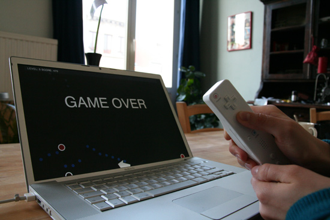

WiiNode
Description
WiiNode is a library for connecting your WiiMote to NodeBox. No actual Wii is needed, just the remote.
Download
 | wiinode.zip (24KB) Last updated for NodeBox 1.9.4 Licensed under the GPL Author: Frederik De Bleser |
Documentation
- Prerequisites
- How to get the library up and running
- Setting up the main loop
- The WiiMote class
- Show me someone fooling around with this
Prerequisites
OSCulator makes the connection with the WiiMote possible. The necessary configuration settings are in the wiidraw.zip file under settings.oscd.
The program needs to be running in the background, and communicates over OSC.
Getting your WiiMote to work with the program, for me, meant pushing the buttons "1" and "2", or alternatively, the red SYNC button (under the battery cover), a few times. Once you get a battery reading, you should be fine.
How to get the library up and running
Put the web library folder in the same folder as your script so NodeBox can find the library. You can also put it in ~/Library/Application Support/NodeBox/.
wiinode = ximport("wiinode")
Outside of NodeBox you can also just do import wiinode.
Setting up the main loop
In your animation, initialize the WiiMote object. Then, in each frame, call the update method:
def setup():
global wm
wm = wiinode.WiiMote()
def draw():
global wm
wm.update()
print wm.yaw
The WiiMote class
To get a good overview of all the values, check out wiinode_example3.py, which visualizes all available WiiMote attributes.
Rotation
The WiiMote returns roll, pitch and yaw. See the Wikipedia article on flight dynamics for more information.
See the wiinode_example1.py for a game that uses the roll value.
wm.pitch # The absolute pitch value
wm.roll # The absolute roll value
wm.yaw # The absolute yaw value
Acceleration
The WiiMote returns acceleration in both x, y and z positions. This is not the remote's absolute position in space. You need an infrared sender for that.
wm.x # The horizontal (left-right) acceleration
wm.y # The forward acceleration
wm.z # The vertical (up-down) acceleration
Buttons
The WiiMote's A and B buttons can be monitored as well.
wm.a # True if the A button is pressed
wm.b # True if the B button is pressed